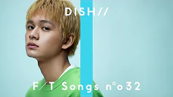
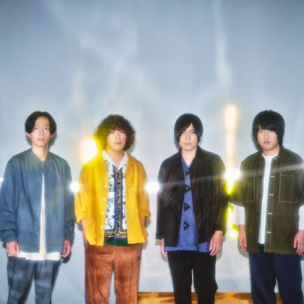

首播日期：2019年12月25日
觀看次數：15,288,476次

LiSA - unlasting / THE FIRST TAKE
Sury Su - ≪摘星≫ Seize The Light / THE FIRST TAKE
首播日期：2022年10月17日
觀看次數：155,290次
觀看次數：155,290次

YOASOBI - 群青 / THE FIRST TAKE
首播日期：2021年2月26日
觀看次數：78,297,565次
觀看次數：78,297,565次
AI – アルデバラン / THE FIRST TAKE
首播日期：2022年2月18日
觀看次數：3,818,782次
觀看次數：3,818,782次

DISH// (北村匠海) - 猫 / THE FIRST TAKE
首播日期：2020年3月20日
觀看次數：190,290,001次
觀看次數：190,290,001次
水曜日のカンパネラ - エジソン / THE FIRST TAKE
首播日期：2022年10月14日
觀看次數：2,189,425次
觀看次數：2,189,425次
Harry Styles - Boyfriends / THE FIRST TAKE
首播日期：2022年6月13日
觀看次數：6,713,976次
觀看次數：6,713,976次

KANA-BOON（谷口鮪）× ネクライトーキー（もっさ） - 想入非非
首播日期：2020年3月13日
觀看次數：34,153,792次
觀看次數：34,153,792次
LiSA×Uru - 再会 (produced by Ayase) / THE FIRST TAKE
首播日期：2020年11月6日
觀看次數：59,586,551次
觀看次數：59,586,551次
Stray Kids - Mixtape : OH / THE FIRST TAKE
首播日期：2021年10月29日
觀看次數：4,290,488次
觀看次數：4,290,488次

XIIX - まばたきの途中 feat. 橋本愛 / THE FIRST TAKE
首播日期：2022年8月10日
觀看次數：1,027,250次
觀看次數：1,027,250次
milet×Aimer×幾田りら - おもかげ (produced by Vaundy)
首播日期：2021年12月17日
觀觀看次數：36,077,870次
觀觀看次數：36,077,870次
鈴木雅之 - DADDY ! DADDY ! DO ! feat. 鈴木愛理 / THE FIRST TAKE
首播日期：2020年8月21日
觀看次數：28,675,754次
觀看次數：28,675,754次
羊文学 - あいまいでいいよ / THE FIRST TAKE
首播日期：2022年4月15日
觀看次數：1,903,995次
觀看次數：1,903,995次
SUPER BEAVER feat. 長屋晴子 – 東京 / THE FIRST TAKE
首播日期：2021年12月10日
觀看次數：6,880,361次
觀看次數：6,880,361次
ClariS - ALIVE / THE FIRST TAKE
上傳者：THE FIRST TAKE 18 小時前
觀看次數：409,813次
觀看次數：409,813次